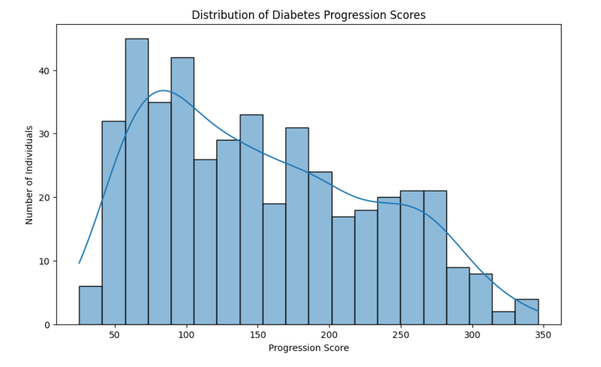
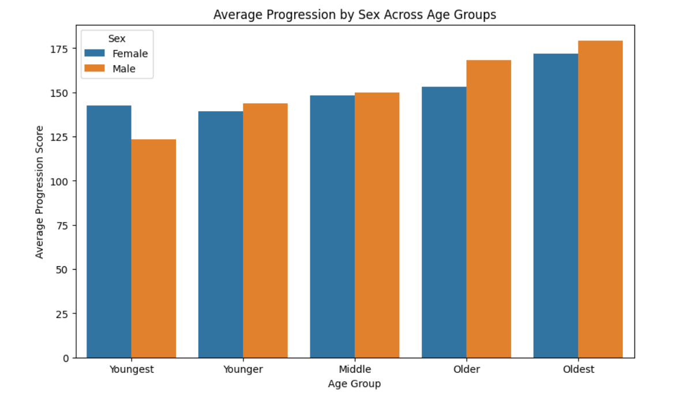
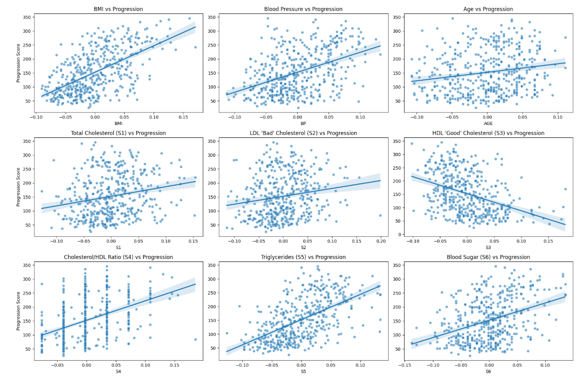
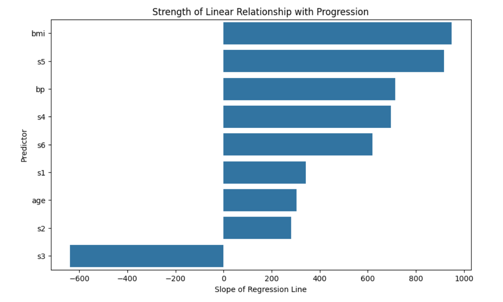

Exploratory Data Analysis & Insights
A demonstration of how Python can be used to explore a complex dataset, visualize patterns, and translate exploratory analysis into clear, decision-relevant insights for policy and program design.
Visual Overview
Below are visualizations made in Python using a 2004 Diabetes Dataset (Open Source). They show how visual analysis can help us understand how demographics and various clinical indicators may influence health outcomes.
Outcome Distribution
Progression by Age & Sex
Health Metrics & Progression
Strength of Association
Analytical Approach
This project applies a workflow designed to answer the question: "Which factors most influence diabetes progression?"
Step 1
Learn About the Data
Use histograms to understand the shape of the outcome and identify any unusual patterns.
Step 2
Look at Demographics
Use bar charts to compare how demographic characteristics influence progression.
Step 3
Look at Health Factors
Use scatter plots with trend lines to examine how key health indicators relate to progression.
Step 4
Confirm Relationships
Calculate trend slopes for continuous variables to see how strongly each factor impacts progression.
Tech Stack
This project uses a lightweight Python stack to move from raw data to clear, interpretable insight.
Key Findings
BMI and triglycerides showed the strongest positive correlation with diabetes progression, which suggests that public health teams may want to focus their interventions on those factors.
Strongest Associations
BMI & Triglycerides (S5)
These variables show the steepest trend slopes with progression, suggesting they are the most influential levers in this dataset.
Protective Indicator
HDL Cholesterol (S3)
Higher HDL cholesterol appears to have a negative correlation with progression, meaning it has a protective effect.
Limited Demographic Impact
Age & Sex
Age and sex show weak associations with progression, which suggests interventions focused on health factors would be more effective.
Limitations
This analysis is exploratory and descriptive. It highlights patterns but does not estimate causal effects or predict individual outcomes. The findings should be read as early signals that guide further investigation, not definitive evidence.
Dataset Constraints
The dataset is small, collected in 2004, and includes a limited set of clinical variables. Important behavioral, social, and environmental factors are not captured.
Correlation, Not Causation
The analysis shows associations but can't confirm causation. Establishing causation requires a study design that supports valid comparisons.
Model Simplicity
Trend slopes provide a simple way to compare relationships, but they do not account for interactions, nonlinear effects, or confounding variables.
Generalizability
Because the dataset is narrow and standardized, the patterns may not generalize to broader or more diverse populations without further validation.